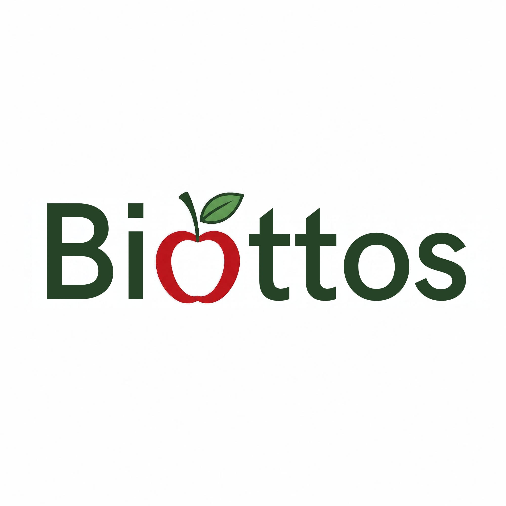
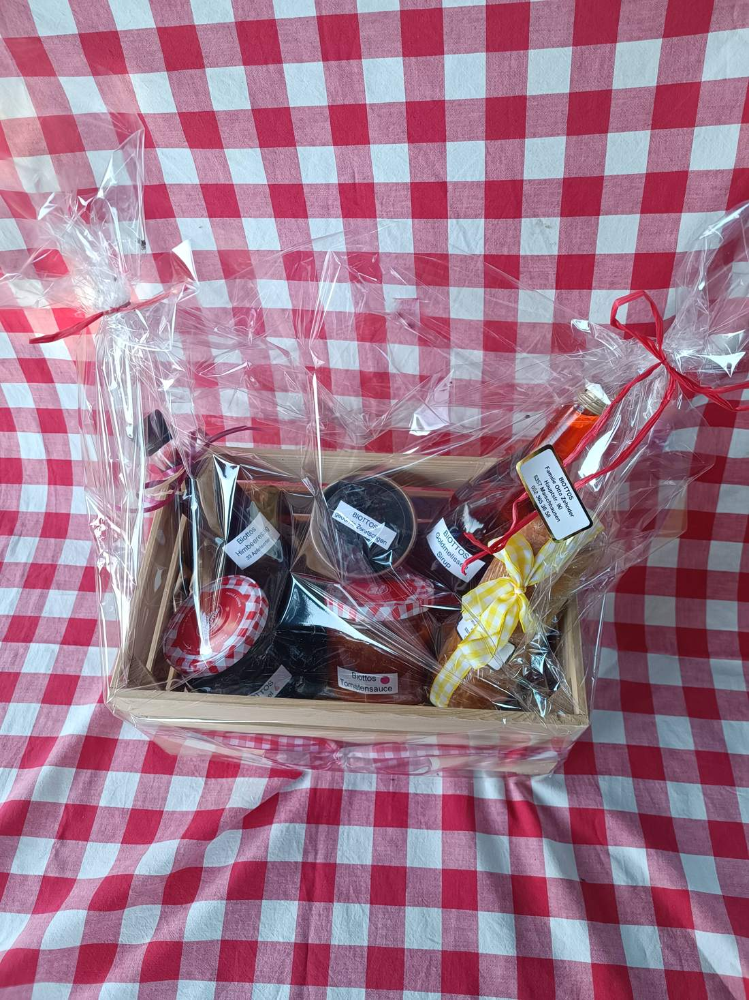
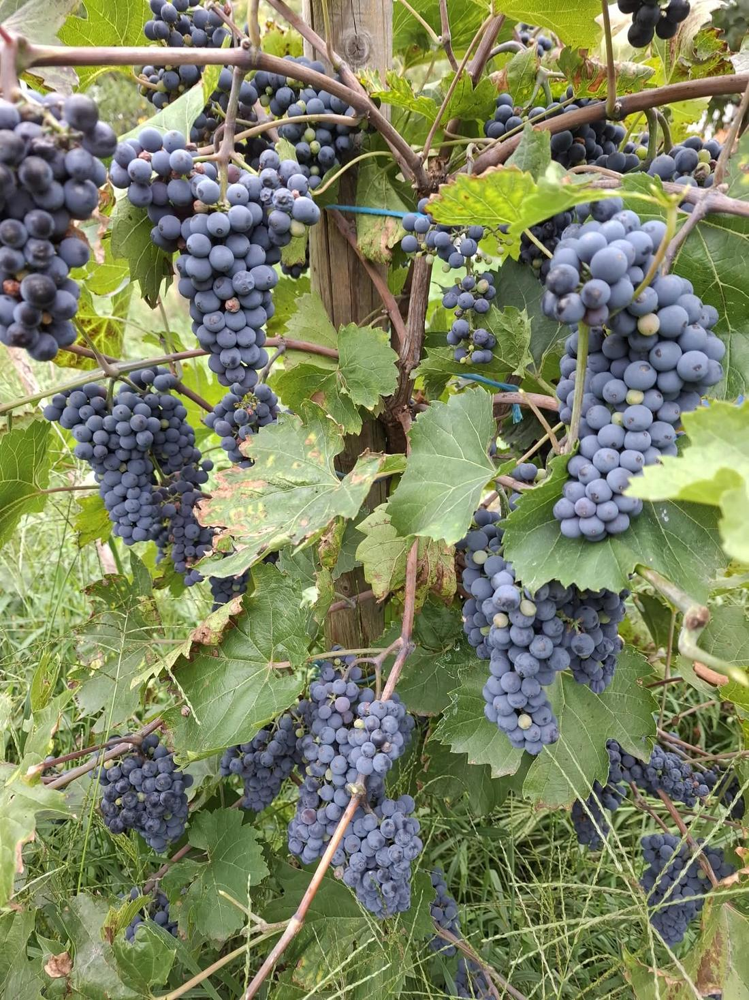
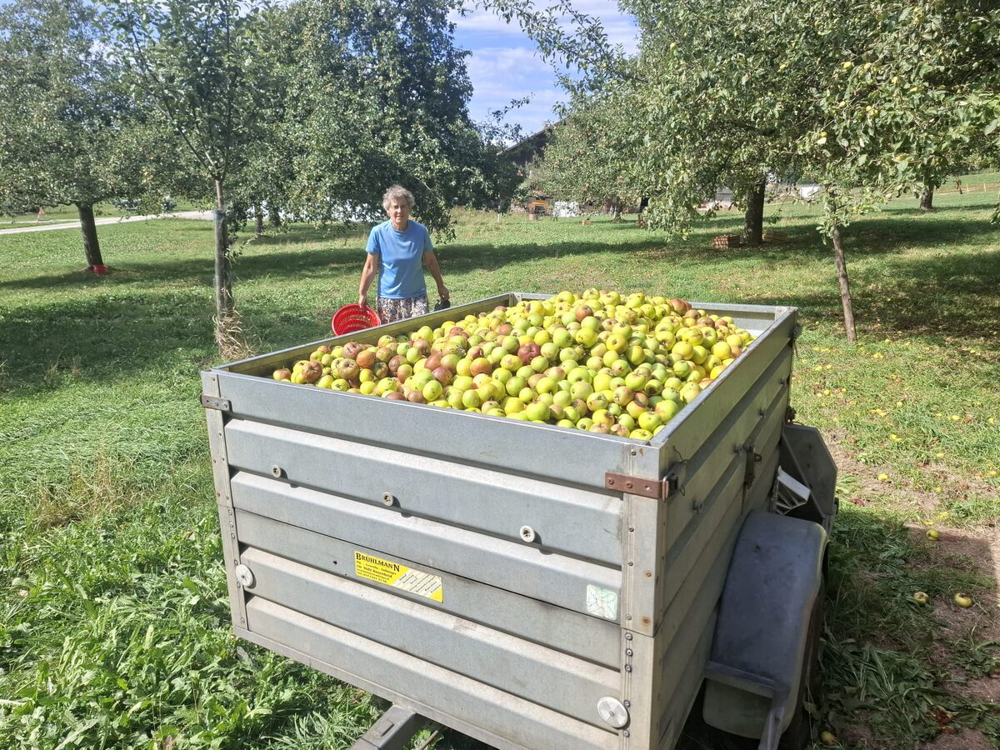
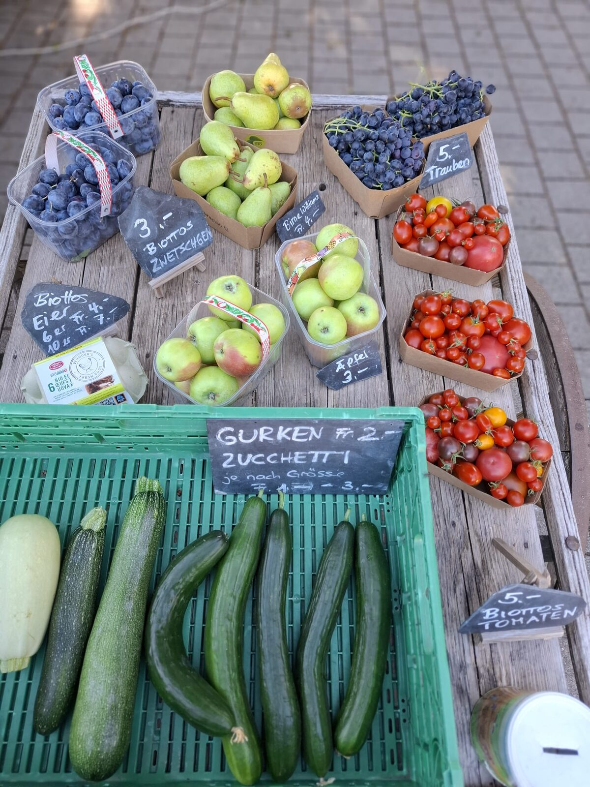
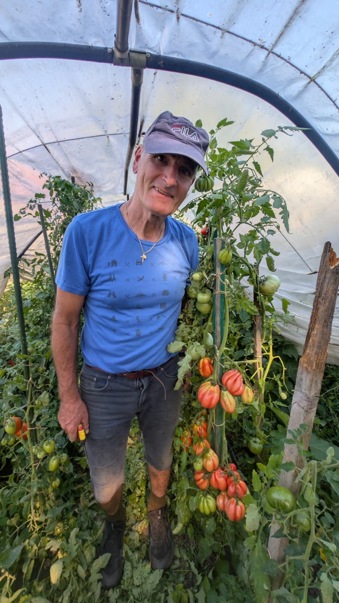
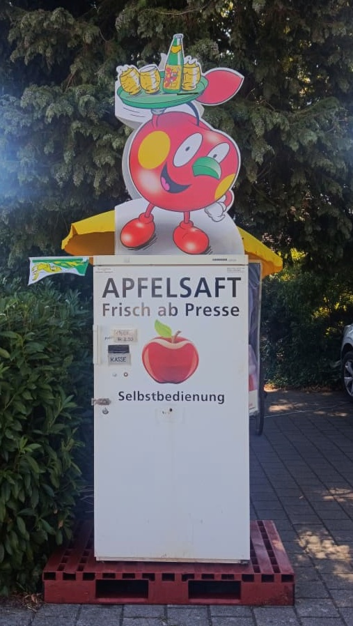

Ein kleines Mitbringsel
Chli & FiiMitbringsel
CHF 19.95
Was ist drin?

- Biottos Himbeeressig
- gedörrte Zwetschgen
- Biottos Birnen-Balsamico

Hausgemacht, persönlich und direkt bei uns zusammengestellt.
Zum Geburtstag, als Dankeschön oder zum Mitbringen.



Auf «Jetzt bestellen» klicken.
Datum und Uhrzeit auswählen.
Im Lädeli – bar oder mit TWINT.

Die blauen Trauben wachsen bei uns im Garten in Maischhausen, wo wir wohnen. Wir haben sie selber gepflückt, als sie schön reif waren.
Otto, der Familienvater, hat daraus zusammen mit Bernadette mit einer Handpresse einen köstlichen Traubensaft gemacht.
Fein zum Zmorge, zum Znüni oder als alkoholfreie Alternative am Tisch.
Fragen Sie uns einfach per WhatsApp, ob gerade Traubensaft im Lädeli bereitsteht.
Nach Traubensaft fragenEs beginnt im Herbst – mit Äpfeln, die wir selber auflesen, und endet mit einem Glas Süssmost am Tisch.

Im Herbst beginnt unsere Süssmost-Geschichte im Obstgarten – mit reifen Äpfeln, die wir von Hand auflesen.

Unsere Essige und Balsamicos entstehen aus Früchten und Zutaten, die zu unserer Familie und unserem Garten gehören. Sie passen zum Salat, zu Käse oder als feine kleine Zugabe zum Verschenken.
Die aktuelle Auswahl kann je nach Saison und Vorrat wechseln. Fragen Sie uns gerne direkt, was gerade im Lädeli bereitsteht.
Essig-Auswahl anfragenUnsere Dörrfrüchte sind eine feine Spezialität aus unserem Lädeli – traditionell verarbeitet und ideal zum Naschen, fürs Zvieri oder zum Verschenken.
Die aktuelle Auswahl kann je nach Saison und Vorrat wechseln. Fragen Sie uns gerne direkt, was gerade im Lädeli bereitsteht.
Hausgemachte Spezialitäten aus unserem Garten – mit kurzen Wegen und viel Handarbeit.
Unsere Tees entstehen aus Pflanzen, die bei uns im Garten gewachsen sind. Wir trocknen und verarbeiten sie sorgfältig, damit ein Stück von unserem Garten auch als feiner Tee im Lädeli erhältlich ist.
Alles stammt von uns und ist bei uns im Garten gewachsen. Die aktuelle Auswahl kann je nach Saison und Vorrat wechseln.
Hinter Biottos Lädeli steht eine Familie, in der Garten, Lebensmittel und unterschiedliche Berufe zusammengehören. Otto ist gelernter Baumschulist. Zusammen mit seiner Frau Helena hat er die Familie geprägt – mit Bernadette, Josef, Lucia und Franziska.
Heute bringt jedes Familienmitglied seine eigene Geschichte mit. Josef ist Milchtechnologe und hat auch diese Website mit aufgebaut – ganz praktisch, damit man unser Lädeli und unsere Körbe einfach kennenlernen kann. Lucia ist Köchin und Franziska gelernte Zierpflanzengärtnerin. Bernadette ist als Tochter von Otto und Helena Teil dieser Familiengeschichte. Sie hilft zu Hause mit, im Garten, beim Backen und überall dort, wo gerade Unterstützung gebraucht wird. Und Helena gehört als Ehefrau von Otto und Mutter der vier Kinder genauso dazu.
Was bei uns aus Garten und Küche entsteht, soll nicht einfach ein Produkt sein. Es soll ein Stück von dem zeigen, was unsere Familie ausmacht: sorgfältig gemacht, persönlich zusammengestellt und mit Freude weitergegeben.

Otto ist gelernter Baumschulist und bringt 40 Jahre Erfahrung mit. Sein Fachwissen reicht von Obstbäumen und Früchten bis zu Gemüse – mit besonderer Leidenschaft für robuste Obstsorten, Veredelungen und Tomaten.
Ob Beratung, Schnitt oder Veredelung: Otto verbindet praktisches Können mit jahrzehntelanger Erfahrung.
Sie möchten einen besonderen Abend geniessen, ohne selbst in der Küche zu stehen? Lucia kommt zu Ihnen nach Hause und kocht für Sie und Ihre Gäste – besonders gerne mit regionalen Zutaten und auf Wunsch auch ausschliesslich mit unseren Produkten aus Biottos Lädeli.
Ob Familienessen, Geburtstag, gemütlicher Abend mit Freunden oder ein kleines Fest: Lucia begleitet Sie auf Wunsch von der Planung über den Einkauf und das Kochen bis zum Aufräumen und Abwaschen.

Husgmachti Spezialitätä, Süessmoscht und wiiteri Produkt us üsem Alltag – diräkt bi üs z’Maischhusä.
Alles, wo bi üs im Lädeli stoht, ghört zu üsem Alltag: sälber gmacht, sorgfältig usgwählt und parat zum Mitnäh oder Verschenke.
Ihr Geschenkskorb steht am vereinbarten Abholtermin im Biottos Lädeli für Sie bereit.
Abholdatum und Uhrzeit geben Sie bei der Onlinebestellung auf dem Bestellzettel an.
Bar oder mit TWINT. Ein Versand ist nicht möglich.
Bei der Onlinebestellung wählen Sie Abholdatum und Uhrzeit. Ihr Korb steht am vereinbarten Termin im Biottos Lädeli bereit.
Ja. Im Bestellzettel können Sie bis zu 10 Körbe auswählen. Bei grösseren Mengen oder Firmenbestellungen melden Sie sich am besten direkt bei uns.
Sie bezahlen bei der Abholung vor Ort – bar oder mit TWINT.
Nein. Die Geschenkskörbe werden im Biottos Lädeli zur Abholung bereitgestellt.
Die genaue Zusammenstellung sehen Sie direkt bei jedem Korb. Unsere Auswahl umfasst hausgemachte Spezialitäten wie Sirup, Saucen, Essige, Balsamicos und Dörrfrüchte.
Fragen zu einem Korb, einer grösseren Bestellung oder einem passenden Geschenk? Schreiben Sie uns direkt.
Für grössere Bestellungen klären wir Menge, Abholtermin und die passende Zusammenstellung direkt mit Ihnen.